Storyboard · 1920×1080 · ca. 2:08 · stilstaande schetsen (nog zonder beweging)
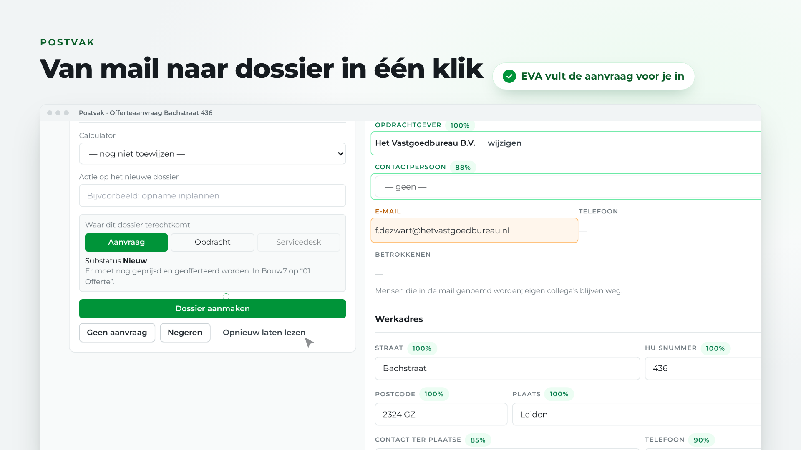
03: Postvak
10 to 19s
"In het postvak leest EVA de aanvraag mee. Opdrachtgever, werkadres en contactpersoon staan al klaar. Eén klik — en het dossier staat."
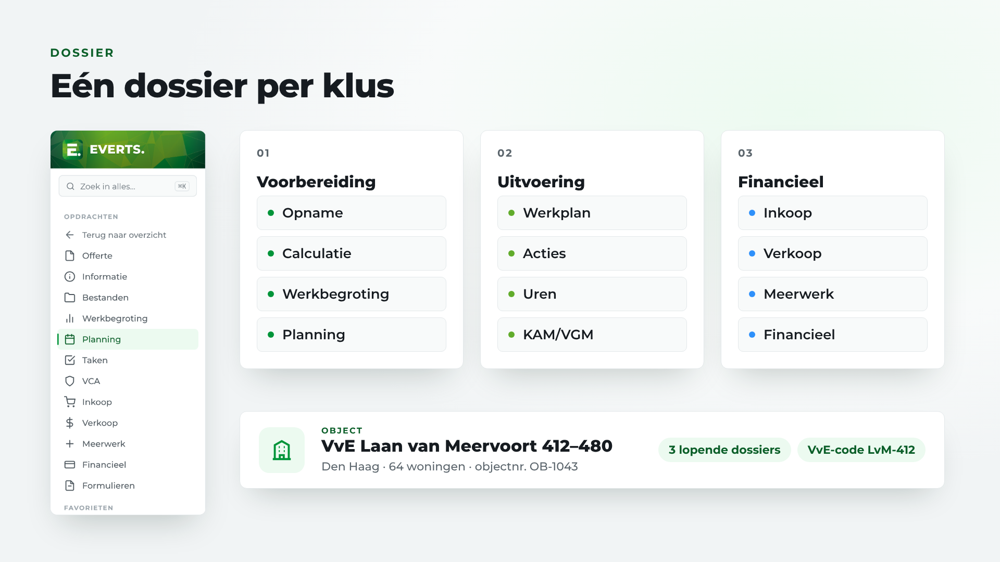
04: Dossier en object
19 to 27s
"Elke klus krijgt een dossier, gekoppeld aan het object: de VvE, het complex of het pand."
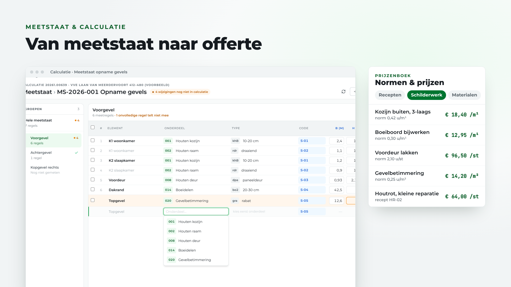
05: Meetstaat en prijzenboek
27 to 36s
"De opname wordt een meetstaat, de meetstaat een calculatie. Met het prijzenboek: vaste recepten, schilderbehandelingen en materiaalprijzen."
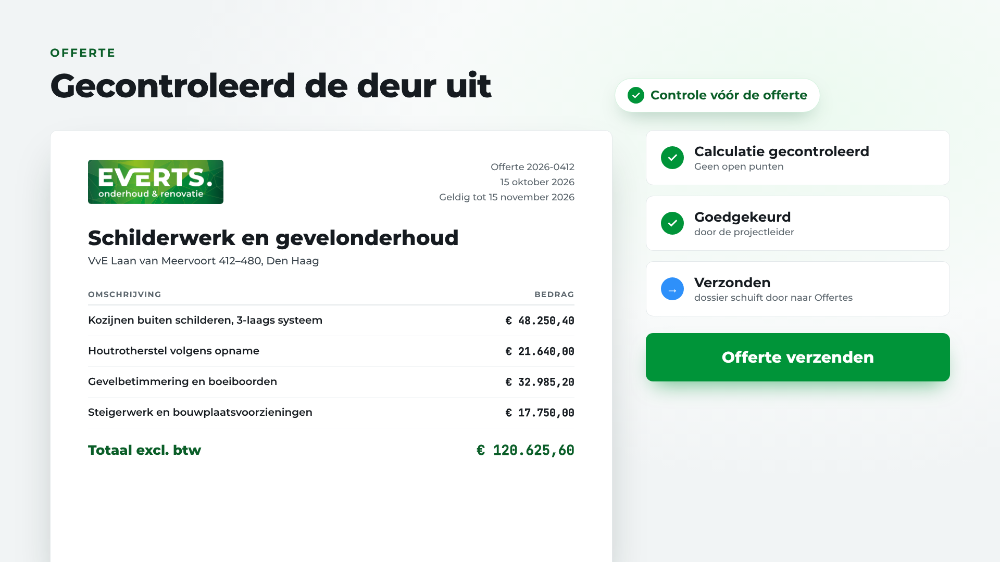
06: Offerte
36 to 45s
"EVA controleert de calculatie. Daarna laat je de offerte goedkeuren en verstuur je hem — en het dossier schuift vanzelf door."

07: Planning
45 to 52s
"Gegund? Sleep het werk op het planbord, en verdeel het over je mensen."
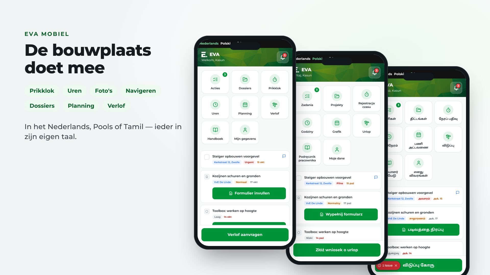
08: EVA Mobiel
52 to 63s
"De vakman ziet het meteen op zijn telefoon. Inklokken, uren schrijven, foto's maken en navigeren naar het werk. In het Nederlands, Pools of Tamil."
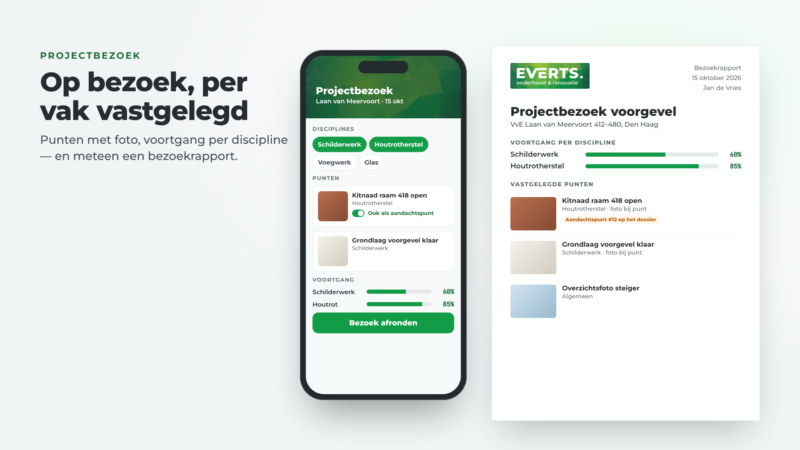
09: Projectbezoek
63 to 74s
"Op projectbezoek kies je de disciplines, leg je punten vast met een foto, en geef je per vak aan hoe ver het werk is. EVA maakt er meteen een bezoekrapport van."
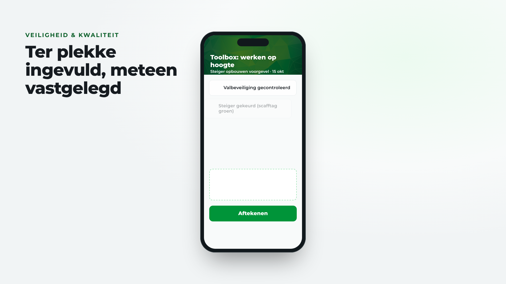
10: Houtrotregistratie
74 to 83s
"Houtrot? Kies de locatie, voeg de werkzaamheden toe, en maak een voor- en na-foto. Kantoor ziet meteen het reparatietotaal."
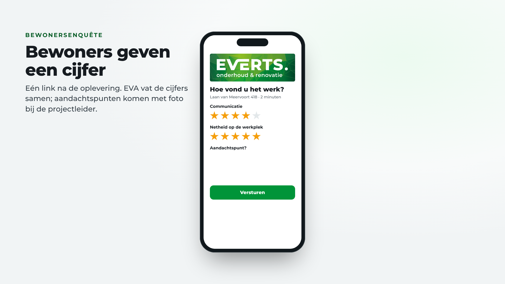
11: Veiligheid en kwaliteit
83 to 91s
"Toolboxmeetings, kwaliteitsinspecties en het opleverrapport: ter plekke ingevuld, met foto's, en meteen vastgelegd."
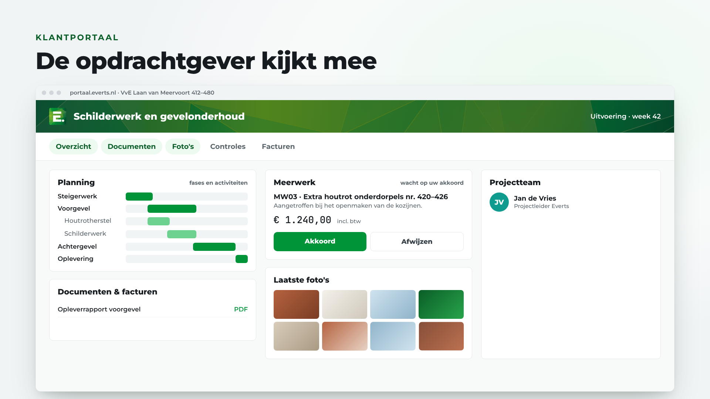
12: Bewonersenquête
91 to 100s
"Na de oplevering vullen bewoners een korte enquête in. EVA vat de cijfers samen, en aandachtspunten komen met foto bij de projectleider."
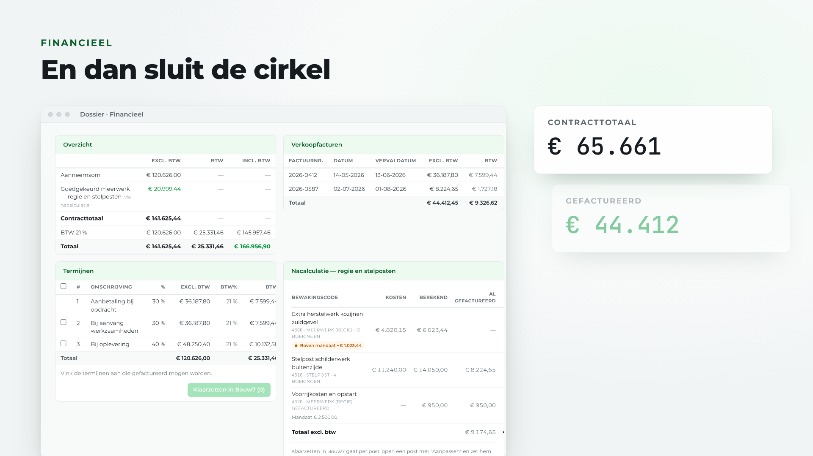
13: Klantportaal
100 to 111s
"De opdrachtgever kijkt mee in het klantportaal: planning, foto's, documenten en facturen. Meerwerk keurt hij daar zelf goed, en vragen stelt hij direct aan het projectteam."
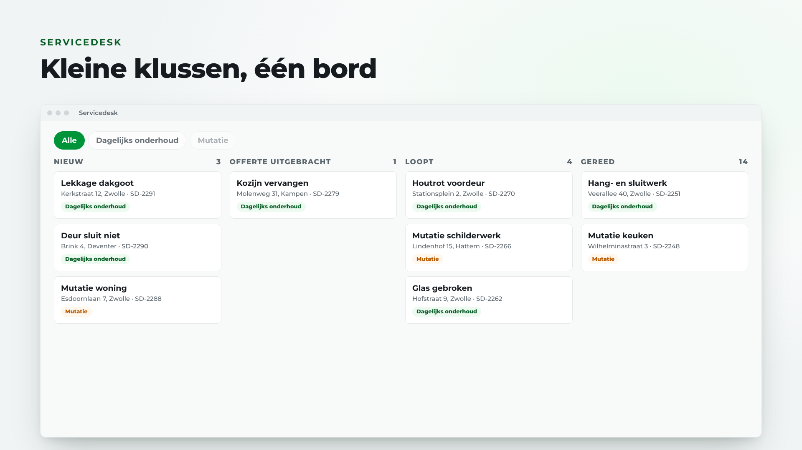
14: Financieel
111 to 120s
"Daarna sluit de cirkel. Termijnen, meerwerk en facturen. Inkoopfacturen goedkeuren. En stuurcijfers voor het management."
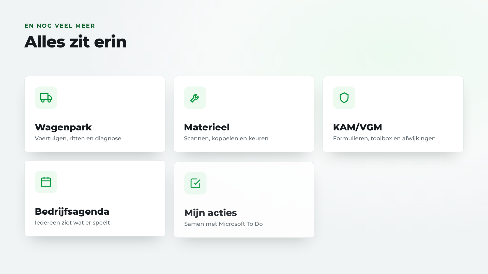
15: Servicedesk
120 to 129s
"Kleine klussen en mutaties lopen via de servicedesk: alle bonnen op één bord, van nieuw tot gereed — en samen op één verzamelfactuur."
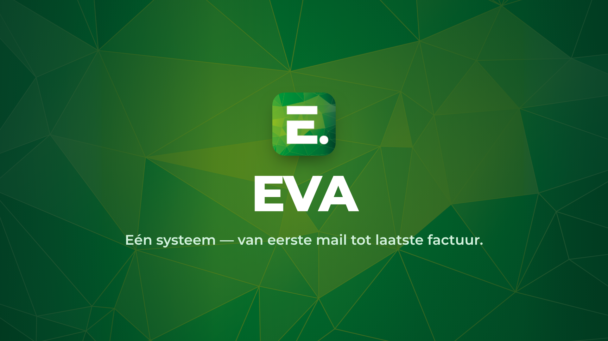
16: En nog veel meer
129 to 137s
"En ook het wagenpark, het materieel, je acties en de bedrijfsagenda. Heb je een vraag? Vraag het EVA."

17: EVA
137 to 143s
"EVA. Eén systeem — van eerste mail tot laatste factuur."